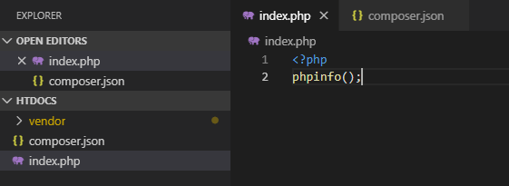
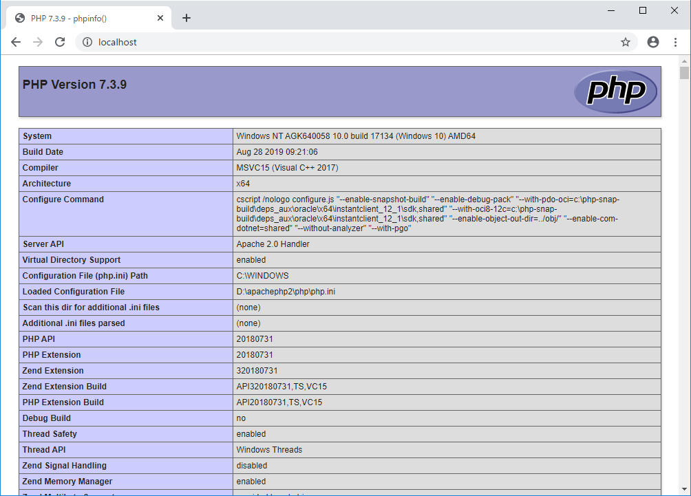
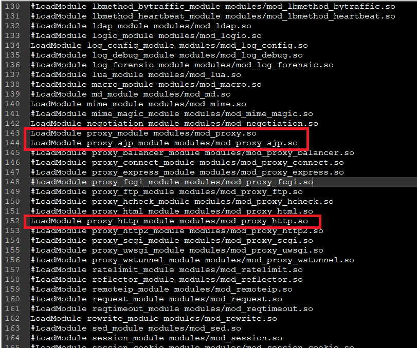
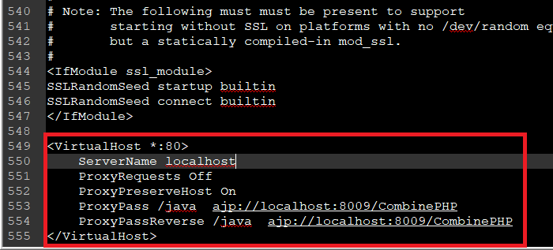
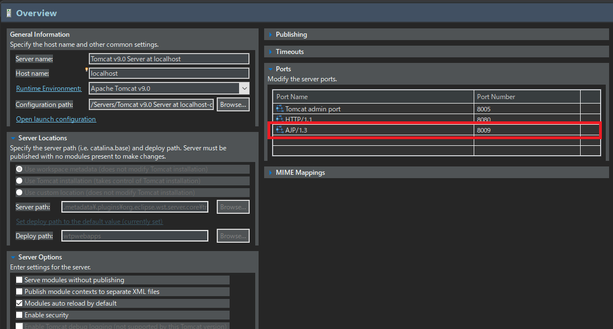
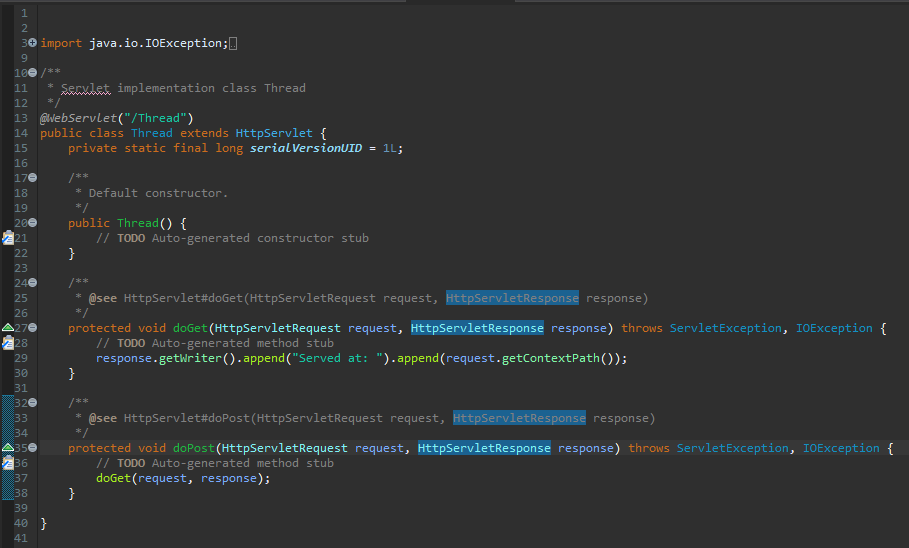
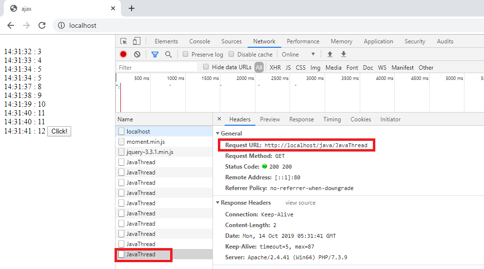

[PHP] Apache環境の同じホスト中でPHPとJava(Servlet)を同時に起動、運用する方法
こんにちは。明月です。
この投稿はApache環境の同じホスト中でPHPとJava(Servlet)を同時に起動、運用する方法に関する説明です。
PHPのウェブプログラムスクリプト言語は魅力が多い言語です。もちろん、Javaのservletも多い利点がある言語です。
私が考えるPHPのウェブプログラム言語の一番の利点はコンパイルとビルド、デプロイ(Deploy)が必要ないことです。これが別になにと思いますが、実務では差異が大きいでしょう。
例えば、サービス運用中のプログラムで致命的なエラーやバグが発生しました。それなら当たり前に直すべきです。そうするとどのように修正するか、Javaならtomcatをshutdownしてデプロイして再起動しなければならないです。
その間にサーバは落ちます。もし、これが接続が多い時間帯なら考えましょう。バグを目前にあっても修正できません。もちろん、バグの種類により違いますが、サーバを落ちることはもっと大きいリスクを発生する可能性があるからです。
でも、PHPの場合はどうでしょう?ただ、ソースを修正すればよいでしょう。コンパイルとビルド、デプロイが要らないのでサーバ再起動が必要なし、修正したすぐ反映です。
JavaはPHPよりもっといい利点がないかというと、スレッド管理です。単純なホームページやデータベースのデータを取得して見せる簡単なウェブページならJavaで開発する必要があるかなと思いますが、スレッド管理が必要なサービスなら話が違います。
どのシステムの他の管理システムやウェブのrequest、response管理だけではなく、継続的にシステムが動いているプログラムならPHPで実装が不可能でしょう。率直に不可能ではありませんが、Safe Threadではなく、Non Thread PHPで作成すればいいですが、これがメモリ管理が難しいと聞きました。(実際に私も使ったことがないので。。。)
それならまず、apacheでphpサーバーを構築しましょう。
これは以前に説明した構築の方法と同じです。そのため、別にPHPを構築する方法は省略します。
link - [PHP] PHP 開発環境設定とEclipse(IDE)の設定
まず、index.phpにphpinfo()を呼び出して画面に表示しましょう。를 호출해서 화면에 표시합니다.


これがapacheにトムキャット(java)を仮想ディレクトリに連結します。まず、apacheのhttpd.confのファイルを開いて中間のproxyモジュールのコメントを解除します。
LoadModule proxy_module modules/mod_proxy.so
LoadModule proxy_ajp_module modules/mod_proxy_ajp.so
LoadModule proxy_http_module modules/mod_proxy_http.so

そしてhttpd.confの一番下にproxyでトムキャットのajpを連結します。
<VirtualHost *:80>
# ホストアドレス
ServerName localhost
ProxyRequests Off
ProxyPreserveHost On
## tomcatと連結するajpアドレス
ProxyPass /java ajp://localhost:8009/CombinePHP
ProxyPassReverse /java ajp://localhost:8009/CombinePHP
</VirtualHost>

私は一応、デバッグで確認するつもりなのでeclipseで連結しますが、本サーバではtomcatで連結すればよいでしょう。
まず、eclipseのサーバ情報を確認してajpのポート番号を確認しましょう。

参考にservlet構築は下記のリンクを参照してください。
link - [Java] 38. Javaでウェブサービスプロジェクト(JSP Servlet)を作成する方法
そしてCombinePHPというのはプロジェクトを生成して、JavaThreadというサーブレットを生成しました。

JavaThreadのクラスにはThreadPoolを一つ生成してphpからjavaのThreadを管理してリターンを受け取るように作成しましょう。
import java.io.IOException;
import java.util.concurrent.ExecutorService;
import java.util.concurrent.Executors;
import javax.servlet.ServletException;
import javax.servlet.annotation.WebServlet;
import javax.servlet.http.HttpServlet;
import javax.servlet.http.HttpServletRequest;
import javax.servlet.http.HttpServletResponse;
@WebServlet("/JavaThread")
public class JavaThread extends HttpServlet {
private static final long serialVersionUID = 1L;
// コンストラクタ
public JavaThread() { }
// シングルトンパターン、Threadpoolのメンバー変数
private static ExecutorService service = null;
private static int timing = 0;
// getタイプに要請した場合
protected void doGet(HttpServletRequest request, HttpServletResponse response)
throws ServletException, IOException {
// メンバー変数serviceがnullの場合にスレッド生成
if (JavaThread.service == null) {
// スレッド生成
JavaThread.service = Executors.newSingleThreadExecutor();
// スレッド実行
JavaThread.service.execute(() -> {
try {
// 1から600まで、1秒単位、つまり、10分単位のスレッドを生成した。
for (int i = 0; i < 600; i++) {
// 現在のカウンターの値をリターンするためにstaticメンバー変数に設定
timing = i;
// スレッド待機、1秒
Thread.sleep(1000);
}
// スレッド停止
JavaThread.service.isShutdown();
// スレッドが終わったら、メンバー変数をnull値に設定
JavaThread.service = null;
} catch (Throwable e) {
e.printStackTrace();
}
});
}
// 現在のスレッドカウンターを応答する。
response.getWriter().append(String.valueOf(timing));
}
// postタイプに要請した場合
protected void doPost(HttpServletRequest request, HttpServletResponse response)
throws ServletException, IOException {
// getタイプの同じ処理
doGet(request, response);
}
}
上のソースは/java/JavaThreadが要請された場合にスレッドを生成するクラスです。現在にスレッドが実行中なら生成せずに、実行中のスレッドのカウンター値をリターンします。
また、php画面に戻ってajaxで上のjava servletを要請しましょう。
<!DOCTYPE html>
<html>
<head>
<title>ajax</title>
</head>
<body>
<label></label>
<button id="testBtn">Click!</button>
<!-- jqueryとmomentライブラリを参照する。 -->
<script type="text/javascript" src="https://code.jquery.com/jquery-3.3.1.min.js"></script>
<script type="text/javascript" src="https://cdnjs.cloudflare.com/ajax/libs/moment.js/2.24.0/moment.min.js"></script>
<script>
$(function(){
// ボタンをクリックするとhttp://localhost/java/JavaThreadを呼び出す。
$("#testBtn").on("click", function(){
$.ajax({
type:"GET",
url:"java/JavaThread",
// スレッドのカウンターを受け取る。
success:function(msg){
// labelタグのエリーマントを取得
$html = $("label").html();
// 内容を更新
$html += "<br />" + moment().format("H:m:s") + " : " + msg;
// labelタグを更新
$("label").html($html);
}
});
});
});
</script>
</body>
</html>
上まで生成が完了されたらapacheのphpページのlocalhost/index.phpから確認しましょう。

上の例を見るとphpのソースからajaxでJavaのサーブレットを呼び出して値を受け取りました。ここで重要なポイントはphpのホストとjavaのホストは同じlocalhostと言うことです。別のポートから開いたことでもなく、同じポートの80からphpとjavaが一緒に動いていることです。
このように運用するとPHPの生産性をもってJavaの拡張性を同時に実装することができることです。また、オープンライブラリだけでもPHPも多いですが、Javaが圧倒的に多いのでPHP環境のプログラムでJavaのライブラリを使えるということです。
例えば、POIというライブラリですね。PHPは私が知ってる限り、POIライブラリがありません。つまり、エクセルやパワーポイントを作成することが難しいということです。
もちろん、二つ言語を同時に使うことで問題は二つの言語を知っているべきだし、別の構造の言語なのでセッション共有ができないです。
正確に言えばセッション共有ができないことより一般的な方法ではなく、fileやデータベース単位のセッションを実装しなければならない面倒がありますね。
ここまでApache環境の同じホスト中でPHPとJava(Servlet)を同時に起動、運用する方法に関する説明でした。
ご不明なところや間違いところがあればコメントしてください。
- [PHP] Apache環境の同じホスト中でPHPとJava(Servlet)を同時に起動、運用する方法2021/11/05 16:52:04
- [Design pattern] 3-5. メメントパターン(Memento pattern)2021/11/16 20:01:36
- [Design pattern] 3-4. イテレータパターン(Iterator pattern)2021/11/15 19:31:28
- [CentOS] Linux環境(CentOS)でCassandra(NoSQL DB)をインストールする方法(DBeaverブラウザでNoSQL使い方)2021/11/12 17:33:58
- [Design pattern] 3-3. コマンドパターン(Command pattern)2021/11/05 17:01:42
- [Window] apache-tomcatでロードバランシング(Load balancing)する方法とセッションクラスタリング（セッション共有）2021/11/05 16:58:45
- [Window] Apacheでmod_jkとmod_proxyの差異、apacheでtomcatのwebsocketのプロキシフォーワードする方法2021/11/05 16:55:05
- [PHP] Apache環境の同じホスト中でPHPとJava(Servlet)を同時に起動、運用する方法2021/11/05 16:52:04
- [C#] 61. ウィンドウフォーム(Window form)でスレッド(Thread)を使い方、クロススレッド問題解決2021/11/04 19:29:51
- [Design pattern] 3-2. 責任の連鎖パターン(Chain of responsibility pattern)2021/11/04 19:27:58
- [Design pattern] 3-1. ストラテジーパターン(Strategy pattern)2021/11/03 18:38:52
- [C#] 60. ウィンドウフォーム(Window form)のイベント設定する方法2021/11/02 21:18:08
- [Design pattern] 2-7. ファサードパターン(Facade pattern)2021/11/02 19:32:31
- [Design pattern] 2-6. プロキシパターン(Proxy pattern)2021/11/01 19:42:44
- [Design pattern] 2-5. フライウェイトパターン(Flyweight pattern)2021/10/29 19:48:27
- [C#] 59. ウィンドウフォーム(Window form)にコントロール(Control)を使い方法2021/10/29 19:45:43